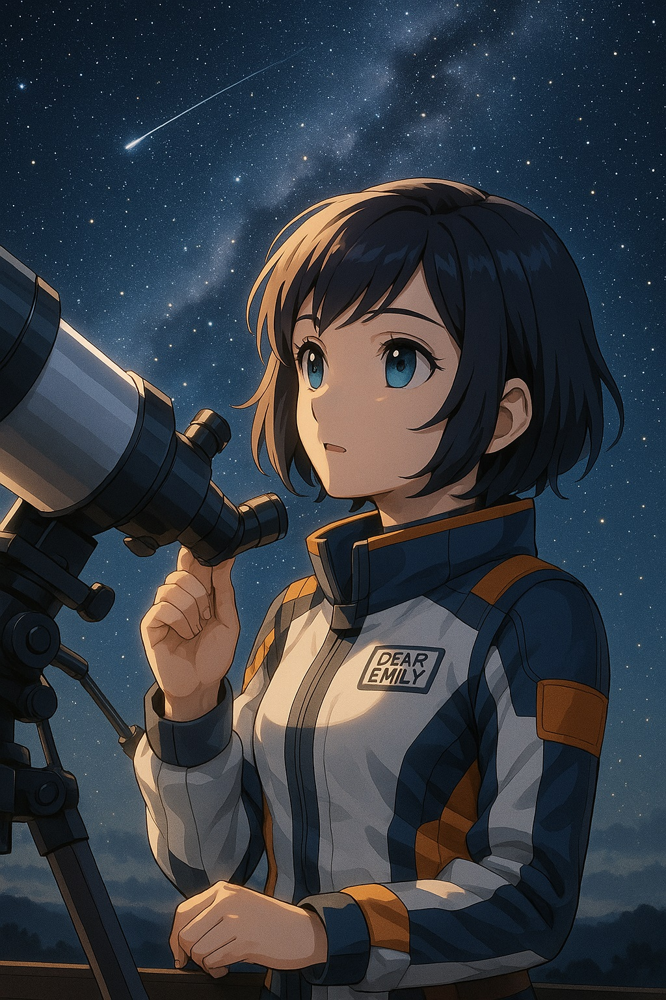
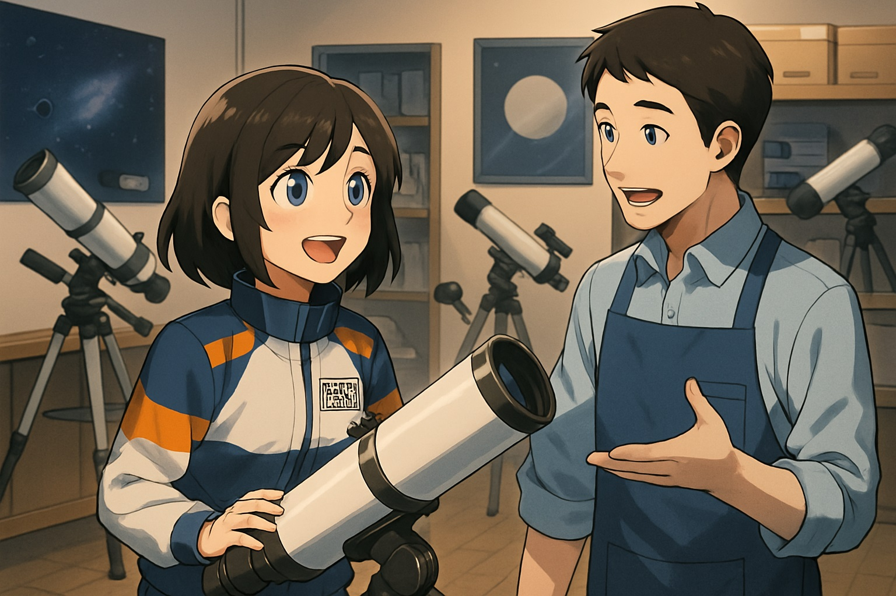
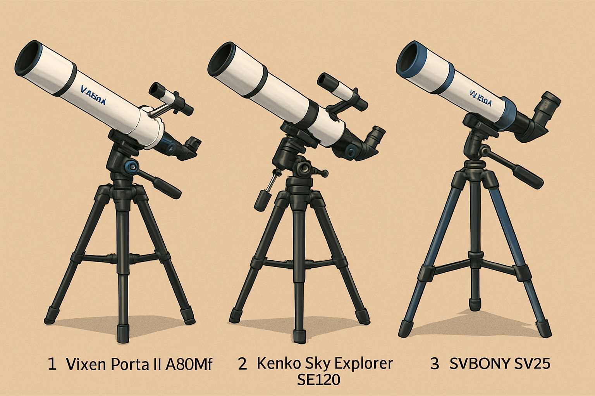
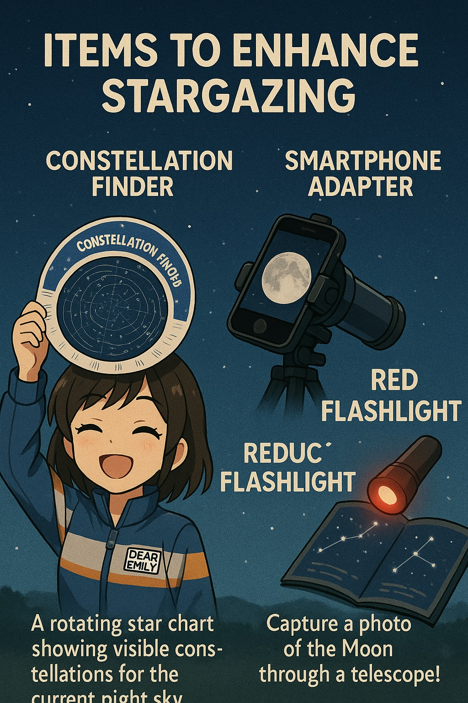
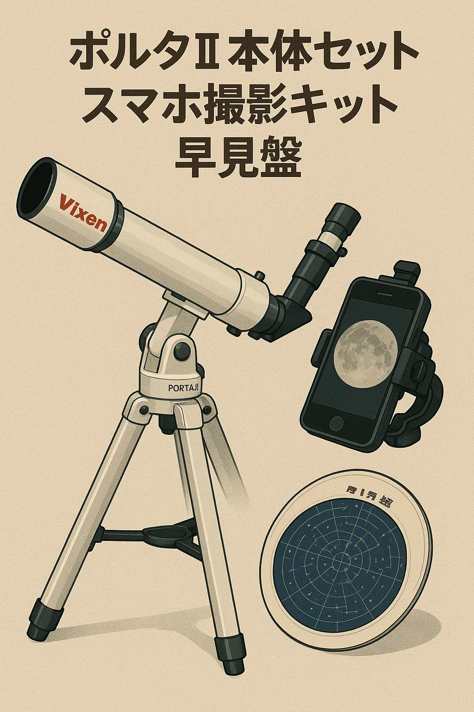

エミリーと選ぶ、はじめての天体望遠鏡｜初心者でも感動できるおすすめ3モデル
「星をもっと近くに感じたい」
「でも、どれを選べばいいの？」
そんなあなたへ、宙ガール・エミリーが「迷わず選べる」天体望遠鏡をご紹介します。
---🌌 プロローグ｜星と出会うための道具を探して
先日、私は天体望遠鏡を購入するために、都内の専門ショップに足を運びました。店員さんは親切で、いろんなモデルを丁寧に紹介してくれました。
「望遠鏡にはそれぞれ個性があるんですよ」と店員さん。初心者にも扱いやすいモデルから、本格的な観測が楽しめるものまで、じっくり説明を聞くことができました。
▶ 天体望遠鏡の種類と特徴 | これだけは知っておきたい
| 種類 | 対象 | 特徴 | 適した目的 |
|---|---|---|---|
| 📘 屈折式 | 初心者 | レンズで光を集める / メンテナンスの手間が少ない | 月 / 明るい惑星 |
| 📗 反射式 | 中級者 / 星雲や星団を見たい人 | 鏡で光を反射 / 光量が多い | 土星 / 星雲 / 星団 |
| 📙 複合型（カタディオプトリック） | オールラウンダー志向 | レンズと鏡を併用 / 高倍率 / コンパクト | 高倍率観測全般 |
✨ おすすめの機種TOP3 | あなたの"見たい"に答えるモデル
🔭1. ビクセン ポルタII A80Mf
- 種類：屈折式
- 価格帯：約30,000〜40,000円
- 特徴：操作が簡単で、安定性も抜群！長く使える定番モデルだよ。
- 見れるもの：月のクレーター、明るい惑星（木星の縞模様や土星の輪もぼんやりと）
「月のクレーターがこんなに細かく見えるなんて！観測のわくわく感、味わってみてね！」
🔭2. ケンコー スカイエクスプローラー SE120
- 種類：反射式
- 価格帯：約20,000〜30,000円
- 特徴：口径が大きいから、暗い星雲や星団も楽しめる！コストパフォーマンスも◎。
- 見れるもの：土星の輪、アンドロメダ銀河、オリオン大星雲など
「土星の輪を見た時は、本当に宇宙にいるみたいだった！感動が止まらないよ！」
🔭3. SVBONY SV25（子供向け）
- 種類：屈折式・広角式
- 価格帯：約5,000〜10,000円
- 特徴：とにかく軽くて持ち運びやすい！お子さんでも簡単に扱えるよ。
- 見れるもの：月、明るい星、景色なども楽しめる
「親子で月を見る時間って、それだけでもう特別な一日になるんだよ。素敵な思い出を作ってね！」
☁️ 天体観測を楽しくするアイテム
- 星座早見盤: 今夜見える星座が一目でわかる、必須アイテム！
- スマホアダプター: 望遠鏡にスマホをセットして、月の写真を撮ってみよう！
- レッドライト: 暗い場所でも目が慣れて、星空を邪魔しない優しい光だよ。
🌟 今が買い時！その理由は？
- 夏休み、夜も暑すぎない最高のシーズン: 夏の夜は過ごしやすくて、観測にぴったり！
- Amazonなどでセール商品あり: 今ならお得な価格で見つけられるチャンスも！
- プレゼントや一緒に買うとお得なセットあり: 大切な人へのギフトにも、仲間とシェアするにも最適だよ。
✅ 機種比較表
| 機種 | タイプ | ユーザー像 | 特徴 | 価格 |
|---|---|---|---|---|
| A80Mf | 屈折式 | 初心者 / 長期利用したい人 | コスパ良し、安定感抜群 | 約35,000円 |
| SE120 | 反射式 | 本格的に楽しみたい / 次のレベルへ行きたい人 | 光量豊富、土星の輪もクリアに | 約28,000円 |
| SV25 | 屈折式 | 親子で楽しみたい / まずは入門として | 軽量、コンパクトで扱いやすい | 約8,000円 |
結論 | 望遠鏡は宇宙へのチケット

「見てみたいな、あの星」
その思いを実現する道具、それが望遠鏡です。
宇宙は遠いけど、それを近づけてくれる、最初の「レンズ」の光を、ぜひ体験してみてください。
きっと、あなたの世界がもっと広がるはずだよ。
---📅 次回予告

次回は、「満月や星座を探す方法」を実際の夜空で試してみます。
宇宙のこの光と知恵を、これからも一緒に見つけに行こうね。